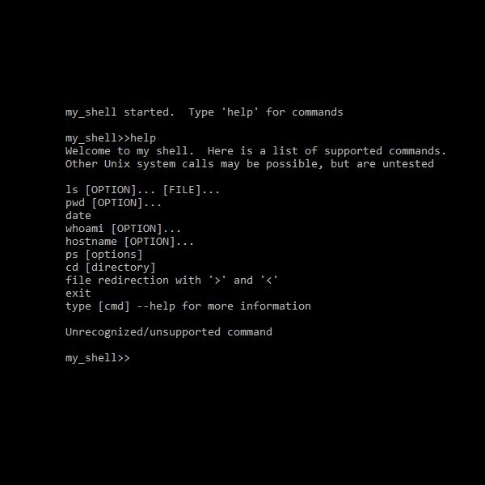

for Unix
This was a great exercise in learning about Linux system calls and process concurrency. This shell is built to run single word commands (ps, date, etc.), commands with arguments (ps -aux), and commands with input and output redirection (ls > output.txt). The system calls are run within a child process while the parent process wait for the child to terminate.
Key Functions
fork() - Used to create a concurrent child process.
execvp() - Used to execute the system call. This function takes two arguments: the first is the path to the command and the second is a pointer to a c_string array containing the command and arguments.
dup2() - This is used to redirect the input or output of command when using '<' or '>'. This takes two arguments, the first is the new file descriptor as an int and the second is the file descriptor to be replaced, as an int.
getInput() - This is a custom function which takes the user's input and parses it into c_strings. This allows the shell to repackage the commands as needed.
getPath() - Function to concatenate path with command name or file namespace
buildArgList() - Builds an array of c_strings from the command and each argument. Also builds a second array of c_strings made from only the command and arguments to the left of a '<'.
forkAndExec() - Where the child processes is created and executed.
execRedirect() - Function to execute commands with redirects (< and >). This function uses dup2() to change the file descriptor.Below is an example output after running the shell script test. Notice that the final command shows that it can handle a multiargument command.